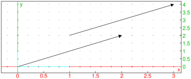

25.6.2 Half-lines in the plane
See Section 26.4.2 for half-lines in space.
The half_line
command creates rays.
-
half_line take two arguments:
P,Q, two points (which can also be given as a list).
- half_line(P,Q)
returns and draws the ray from P through Q
Example
